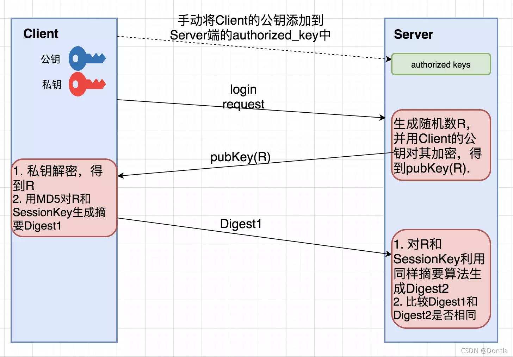

ssh连接
ssh概念
-
SSH，全称Secure Shell，意为“安全外壳协议”
-
一种加密的网络协议，用于在不安全的网络中安全地执行网络服务
-
最常见的用途是远程登录到服务器，执行命令，以及在客户端和服务器之间安全地传输文件
工作原理
当用户尝试通过SSH连接到远程服务器时，会发生以下主要步骤：
-
连接建立：SSH客户端向SSH服务器发起连接请求。服务器会响应并发送其公钥给客户端。
-
密钥交换与加密协商：客户端接收到服务器的公钥后，会生成一个随机的会话密钥，并使用服务器的公钥对其进行加密，然后发送给服务器。服务器使用其私钥解密会话密钥。至此，客户端和服务器都拥有相同的会话密钥。此后，所有通信都将使用这个会话密钥进行对称加密。
-
身份认证：客户端需要向服务器证明自己的身份。这可以通过以下两种主要方式实现：
-
密码认证：客户端发送用户名和密码给服务器。服务器验证这些凭据。如果匹配，则认证成功。
-
密钥认证：客户端向服务器发送其公钥的指纹。服务器在
~/.ssh/authorized_keys文件中查找匹配的公钥。如果找到，服务器会生成一个随机字符串并使用客户端的公钥加密，然后发送给客户端。客户端使用其私钥解密该字符串，并将其发送回服务器。服务器验证解密后的字符串是否与原始字符串匹配。如果匹配，则认证成功。这种方式通常更安全，因为它不需要在网络上传输密码。 -
会话建立：认证成功后，SSH会话正式建立。用户可以在客户端通过加密通道安全地执行命令、传输文件等操作。
感觉单看文字看不懂，就又去搜了一下其他带图解的教程，这个讲的就挺清晰的超详细的图解SSH原理（真的超详细哦~~~~~~~~~）-CSDN博客
核心就是这张图

相当于client自己有公私钥，公钥扔出去，私钥自己保留，最后靠着同有的随机数R和SeeionKey来进行验证
连接方法
基本连接
指令：ssh [username]@[hostname_or_ip]
-
username：你在远程服务器上的用户名。例如，如果你要连接到一台Linux服务器，通常会使用root、ubuntu、centos等用户名，或者你在服务器上创建的普通用户。 -
hostname\_or\_ip：远程服务器的IP地址（例如：192.168.1.100）或主机名（例如：example.com）。
示例：
假设你要连接到IP地址为192.168.1.100的服务器，并使用用户名为myuser登录，命令如下：
如果你是第一次连接这台服务器，系统会提示你确认服务器的真实性。这是SSH为了防止“中间人攻击”而设计的安全机制。你会看到类似以下的信息：
The authenticity of host '192.168.1.100 (192.168.1.100)' can't be established.
ECDSA key fingerprint is SHA256:xxxxxxxxxxxxxxxxxxxxxxxxxxxxxxxxxxxxxxxxxxx.
Are you sure you want to continue connecting (yes/no/[fingerprint])?
输入yes并按回车，服务器的公钥指纹将被添加到你的~/.ssh/known_hosts文件中。此后再次连接时，就不会再出现此提示。如果服务器的公钥指纹发生变化，SSH会发出警告，这可能意味着服务器的身份被冒充，或者服务器的操作系统被重新安装过。
指定端口连接
指令：ssh -p [port] [username]@[hostname_or_ip]
默认情况下，SSH服务器监听22端口。但出于安全考虑，许多服务器管理员会将SSH服务配置在非标准端口上。在这种情况下，你需要使用-p选项来指定端口号
-p [port]：指定SSH连接的端口号。例如，如果SSH服务在2222端口上运行，则使用-p 2222。
示例：
假设你要连接到IP地址为192.168.1.100的服务器，使用用户名为myuser，并且SSH服务运行在2222端口，命令如下：
密码认证
当你执行SSH连接命令后，如果服务器配置为允许密码认证，系统会提示你输入密码：
输入你在远程服务器上myuser的密码，然后按回车。请注意，当你输入密码时，屏幕上不会显示任何字符（包括星号），这是正常的安全行为。如果密码正确，你将成功登录到远程服务器的命令行界面。
因此，在生产环境中，强烈建议使用更安全的SSH密钥认证方式，即免密登录
密钥认证（免密登录）
-
SSH密钥认证是比密码认证更安全、更便捷的登录方式。它基于非对称加密原理，使用一对密钥：一个公钥（public key）和一个私钥（private key）。
-
公钥可以公开，而私钥必须严格保密。当你使用密钥认证登录时，服务器会使用你的公钥来验证你的身份，而无需输入密码
生成SSH密钥对的指令：ssh-keygen
在你的本地机器（客户端）上，使用ssh-keygen命令来生成SSH密钥对。默认情况下，它会生成RSA算法的密钥对
执行此命令后，系统会提示你：
-
Enter file in which to save the key (/home/your_user/.ssh/id_rsa):
这是密钥文件的保存路径。默认路径是用户主目录下的
.ssh隐藏文件夹，文件名为id_rsa（私钥）和id_rsa.pub（公钥）。通常情况下，直接按回车接受默认路径即可。 -
Enter passphrase (empty for no passphrase):
这是为你的私钥设置一个密码短语（passphrase）。设置密码短语可以增加私钥的安全性，即使私钥被盗，没有密码短语也无法使用。如果你希望实现完全的免密登录，可以直接按回车留空。但为了更高的安全性，建议设置一个强密码短语。如果你设置了密码短语，每次使用私钥时都需要输入它。
-
Enter same passphrase again:
再次输入密码短语进行确认。
成功生成密钥对后，你会在\~/.ssh/目录下看到两个文件：
-
id_rsa：你的私钥文件。请务必妥善保管，不要泄露给任何人。
-
id_rsa.pub：你的公钥文件。这个文件可以安全地分享给需要连接的服务器。
公钥与私钥
-
公钥（Public Key）：用于加密数据和验证数字签名。你可以将其放置在任何你想要通过SSH连接的服务器上。当服务器收到连接请求时，它会使用你的公钥来验证你的身份。
-
私钥（Private Key）：用于解密数据和生成数字签名。它必须保存在你的本地机器上，并且只有你自己可以访问。私钥是SSH密钥认证的核心，它的安全至关重要。
将公钥复制到服务器：ssh-copy-id 或手动复制到 ~/.ssh/authorized\_keys
为了让服务器信任你的公钥，你需要将你的公钥（id_rsa.pub的内容）添加到远程服务器上对应用户的~/.ssh/authorized_keys文件中。
方法一：使用ssh-copy-id（推荐）
ssh-copy-id是一个非常方便的工具，它可以自动将你的公钥复制到远程服务器的authorized\_keys文件中，并设置正确的权限。这是最推荐的方法。
执行此命令后，它会提示你输入远程服务器上myuser的密码。输入正确密码后，你的公钥就会被添加到服务器的/.ssh/authorized_keys文件中。如果/.ssh目录或authorized_keys文件不存在，ssh-copy-id也会自动创建并设置正确的权限
方法二：手动复制
如果你的系统没有ssh-copy-id命令，或者你更喜欢手动操作，可以通过以下步骤完成：
1.在本地机器上查看公钥内容：
2.登录到远程服务器：使用密码认证方式登录到远程服务器。
3.创建或编辑authorized\_keys文件：在远程服务器上，确保~/.ssh目录存在，并且权限正确（通常是700）。如果不存在，请创建它：
使用密钥连接
完成公钥的复制后，你就可以尝试使用密钥进行连接了。如果一切配置正确，你将无需输入密码即可直接登录
如果你的私钥设置了密码短语，系统会提示你输入私钥的密码短语。如果私钥没有设置密码短语，你将直接登录成功。
故障排除提示：
-
如果无法通过密钥登录，请检查服务器上
~/.ssh目录和authorized_keys文件的权限。它们必须是严格的，否则SSH服务器会拒绝使用。 -
检查SSH服务器的
sshd_config文件，确保PubkeyAuthentication yes已启用。 -
确保你使用的私钥与服务器上的公钥是匹配的。
密钥认证是SSH最强大和安全的特性之一，强烈建议在所有生产环境中使用它。
实际操作
1. 基本密码认证连接
这是最简单的连接方式，使用用户名和密码登录。
# 将 myuser 和 192.168.1.100 替换为您的用户名和服务器IP地址
<div markdown="1" style="margin-top: -30px; font-size: 0.75em; opacity: 0.7;">
:material-circle-edit-outline: 约 2672 个字 :fontawesome-solid-code: 45 行代码 :material-image-multiple-outline: 1 张图片 :material-clock-time-two-outline: 预计阅读时间 9 分钟
</div>
ssh myuser@192.168.1.100
# 如果SSH服务运行在非标准端口（例如2222），请使用 -p 选项
ssh -p 2222 myuser@192.168.1.100
执行命令后，系统会提示您输入密码。输入正确的密码后即可登录。
2. 生成SSH密钥对
在您的本地计算机上执行此操作，以创建用于免密登录的密钥。
# 生成一个新的SSH密钥对
ssh-keygen -t rsa -b 4096 -C "your_email@example.com"
# 您可以一路按回车使用默认设置
# 建议为私钥设置一个安全的密码短语（passphrase）
这将在您的 ~/.ssh/目录下创建 id_rsa (私钥) 和 id_rsa.pub (公钥) 两个文件。
3. 将公钥复制到远程服务器
为了实现免密登录，您需要将您的公钥 (id_rsa.pub) 的内容添加到远程服务器的 ~/.ssh/authorized_keys 文件中。
推荐使用 ssh-copy-id 命令：
系统会提示您输入一次密码，之后您的公钥就会被添加到服务器上。
如果无法使用 ssh-copy-id，可以手动复制：
# 1. 在本地计算机上，显示并复制公钥内容
cat ~/.ssh/id_rsa.pub
# 2. 通过密码登录到远程服务器
ssh myuser@192.168.1.100
# 3. 在远程服务器上，将公钥内容追加到 authorized_keys 文件
mkdir -p ~/.ssh
echo "在此处粘贴您复制的公钥内容" >> ~/.ssh/authorized_keys
# 4. 设置正确的文件权限
chmod 700 ~/.ssh
chmod 600 ~/.ssh/authorized_keys
# 5. 退出远程服务器
exit
4. 使用密钥进行免密登录
完成上述步骤后，您就可以在不输入密码的情况下连接到远程服务器了。
如果您为私钥设置了密码短语，系统会提示您输入该密码短语。
5. 使用SSH配置文件简化连接
在您的本地计算机上，编辑 ~/.ssh/config 文件，为您的连接创建一个别名。
# ~/.ssh/config 文件内容示例
Host myserver
HostName 192.168.1.100
User myuser
Port 22
IdentityFile ~/.ssh/id_rsa
现在，您可以使用更简单的命令进行连接：
注
还有一些高级操作没学，看到时候会用到什么再来考虑，记录可以直接到manus这里来找